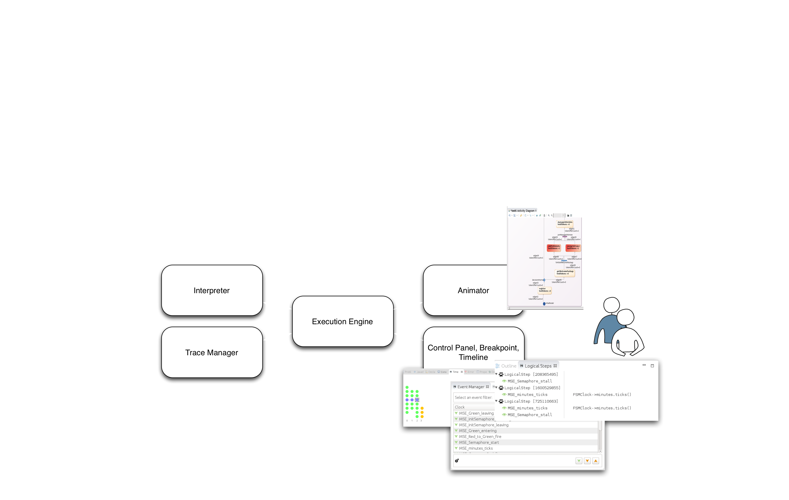
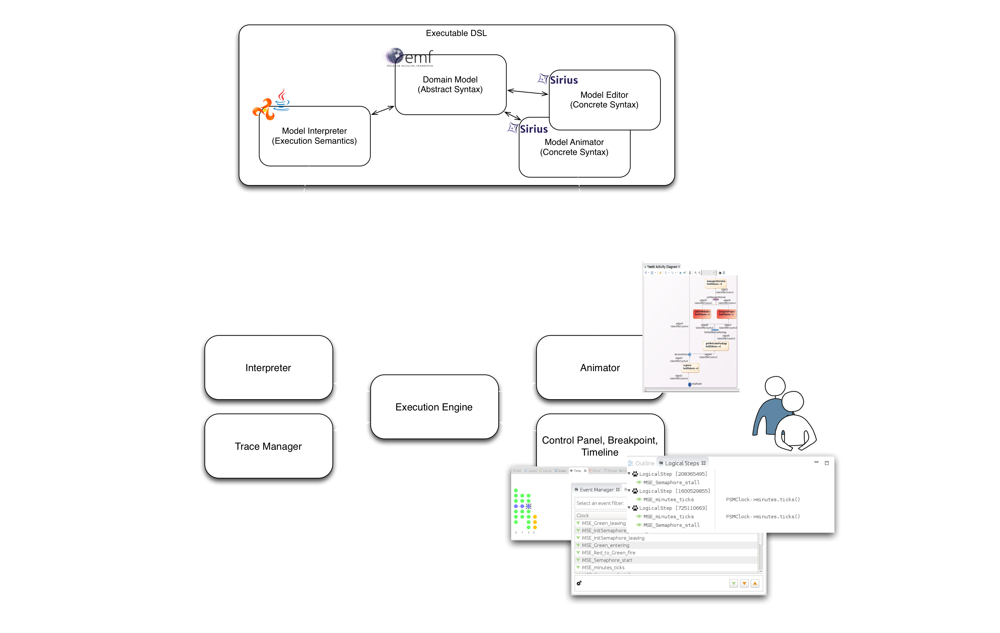

Breathe life into your designer!
with Sirius and GEMOC
Cédric Brun, OBEO (@bruncedric)
Benoit Combemale, INRIA and Univ. Rennes 1 (@bcombemale)
Slides available at http://siriuslab.github.io/talks/BreatheLifeInYourDesigner/slides
(Domain-Specific)
Behavioral Models
Business Processes, Orchestrations, Functional chains, Activities, Protocoles, Scenarios...
Analysis of Behavioral Models
- Early V&V or impact analysis of behavioral properties
- Software engineering, systems engineering, enterprise architecture, scientific modeling...
Model Debugging
- Traversing step forward the states reached by the model through the application of the interpreter
- Intuitive model comprehension technique
- No abstraction gap
- Better turn-arounds
- ⇒ Fast convergence towards an acceptable design
Omniscient Model Debugging
- Relies on an execution trace to revert the executed model into a prior state
- Forward/backward navigation into the execution trace
- No record & replay
- (similar) Replay
Omniscient Debugging of Activity Diagrams
Required Tools

How to get your own
(domain-specific) debugger?
Required Developments

Proposed Approach: Wrap-up
- Xtend/Kermeta or Java to define the interpreter
- Sirius Animation to define the animator
- A generative approach for the trace manager
- A generic execution engine
- A generic control panel and timeline
Animating Arduino Designer
a simple Eclipse Based tooling
Arduino Simulator
- 2 new plugins :
- fr.obeo.dsl.arduino.simulator
- fr.obeo.dsl.arduino.simulator.design
------------------------------------------------------------ Language files blank comment code ------------------------------------------------------------ Java 14 229 318 1185 XML 5 0 0 329 Maven 2 12 18 54 ------------------------------------------------------------ SUM: 21 241 336 1568 ------------------------------------------------------------
Interpreter
public class LoopSwitch extends ArduinoSwitch {
//...
@Override
public Object caseSensor(Sensor sensor) {
final Pin pin = ArduinoUtils.getPin(simulator.getProject(),
sensor.getModule());
return interpretObjectValueToBoolean(simulator.getPinLevel(pin));
}
@Override
public Object caseRepeat(Repeat repeat) {
final Instruction first = repeat.getInstructions().get(0);
for (int i = 0; i < repeat.getIteration(); ++i) {
Instruction current = first;
while (current != null) {
doSwitch(current);
current = current.getNext();
}
}
return null;
}
// ...
}
Execution Engine
public class SimulatorDebugger extends AbstractDSLDebugger {
//...
public void start() {
new Thread(new Runnable() {
public void run() {
spawnRunningThread(Thread.currentThread().getName(),
simulator.getProject());
simulator.init();
simulator.loop();
}
}, "Arduino Simulator").start();
}
public void updateData(String threadName, EObject instruction) {
if (!hardwareFramePushed) {
pushStackFrame(Thread.currentThread().getName(), simulator
.getProject().getHardware().getName(), simulator
.getProject().getHardware(), instruction);
hardwareFramePushed = true;
} else {
setCurrentInstruction(Thread.currentThread().getName(), instruction);
}
for (Entry<Variable, Object> entry : nextSuspendVariables.entrySet()) {
variable(threadName,
simulator.getProject().getHardware().getName(), "variable",
entry.getKey().getName(), entry.getValue(), true);
}
if (!nextSuspendVariables.isEmpty()) {
lastSuspendVariables = nextSuspendVariables;
nextSuspendVariables = new HashMap<Variable, Object>();
}
for (Entry<Pin, Integer> entry : nextSuspendPins.entrySet()) {
variable(threadName,
simulator.getProject().getHardware().getName(), "pin",
String.valueOf(entry.getKey().getId()), entry.getValue(),
true);
}
if (!nextSuspendPins.isEmpty()) {
lastSuspendPins = nextSuspendPins;
nextSuspendPins = new HashMap<Pin, Integer>();
}
}
// ...
}
Animator
- simulator.odesign customizing arduino.odesign
Animator (2)
- Contributing actions
- Adapting style
Leverage the Sirius Animation runtime
- Encapsulate step over/into/return in transactions
- Bridge the Eclipse Debug APIs and the EMF APIs
- Transmit events and requests
- Initialize the tooling extension
- Provide off-the-shelf ecore model for runtime data
Ecore model for Runtime data
Launch Configurations
Demo
... with no cat

GEMOC
- The GEMOC ANR project (http://gemoc.org/ins):
A Language Workbench for concurrent execution and simulation of heterogeneous models
- The GEMOC Initiative (http://gemoc.org/):
GEMOC is an open international initiative that aims to coordinate and disseminate the research results regarding the support of the coordinated use of various modeling languages that will lead to the concept of globalization of modeling languages, that is, the use of multiple modeling languages to support coordinated development of diverse aspects of a system.
GEMOC Technologies
- Ready for pilote project:
- Sirius Animation (animator designer and runtime, execution engine, trace manager)
- Ready for more R&D:
- MoccML and Timesquare for explicit concurrency specification in DSLs
- BCOoL for coordination patterns between DSLs
Introducing Sirius Lab
in a Nutshell...
- POJO Animator (case of Arduino Designer)
- Code the Interpreter, the Execution Engine and possibly any additional tools
- quick results, easy to integrate, very few (or custom) execution control.
- Advanced Animator (case of Activity Diagram)
- Code the Interpreter and use the generic Execution Engine and Trace manager
- more analysis capabilities (concurrency) and rich execution control (panel, timeline...)
TO BE CONTINUED...
- Try executable Arduino Designer 0.1.x
- Read the GEMOC Publications
- Join the GEMOC Initiative
- Get in touch with us to
breath life into your designer